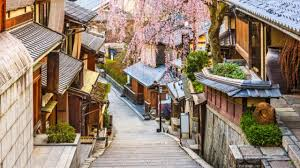
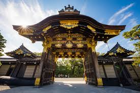
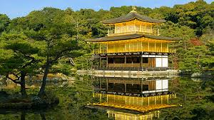

Gion District
Gion is Kyoto’s geisha district, with hostesses in colorful kimonos
often sighted on the wooden Tatsumi Bridge, or amid upscale Japanese
restaurants and boutiques on Hanamikoji Street.

Nijo Castle
Nijō Castle is a flatland castle that consists of two concentric rings
of fortifications, the Ninomaru Palace, the ruins of the Honmaru Palace, various support buildings and several
gardens.

Kinkaku-ji: The Golden Pavilion
Kinkaku-ji, officially named Rokuon-ji, is a Zen Buddhist temple in
Kyoto, Japan. It is one of the most popular buildings in Japan,
attracting many visitors annually.
